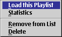
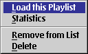
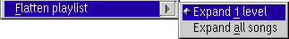

Playlist Manager
(Tree view)

Clicking the second mouse button on an item in the playlist, playlist manager or bookmark window opens the context menu of this item. In the detailed view you may also select multiple items.
Playlist Manager (Tree view)

Load
Load a playlist item into the player. This will stop any other playback if any.
Navigate to
Navigates to the desired item of the currently playing playlist. This is disabled if the selected item is no unambiguous subitem of a currently loaded playlist.
Edit Playlist / Detaild view
Opens the selected playlist in the playlist editor.
Open in tree view / Tree view from here
Opens the selected playlist in the playlist manager view.
Show item info
Show a dialog with informations to the selected item.
Edit song info...
Edits the song info of the currently loaded file. This is disabled if the apropriate decoders do not support this for the selected files.
Refresh status
Reloads the meta information of the selected song(s).
Append to... (Tree view only)

Appends one or multiple files, an URL from the Internet for streaming or CD tracks to the selected playlist.
Sort (Tree view only)
This submenu has options to sort the selected playlist by size, playing time, filename or songname and so on.
Remove item
Removes a song or nested playlaylist from it's parent. This does not immediately modify or delete the file on disk. It also does not touch the removed file.
Expand

Expanding a playlist does not modify the song sequence played by PM123. It only changes the playlist structure.